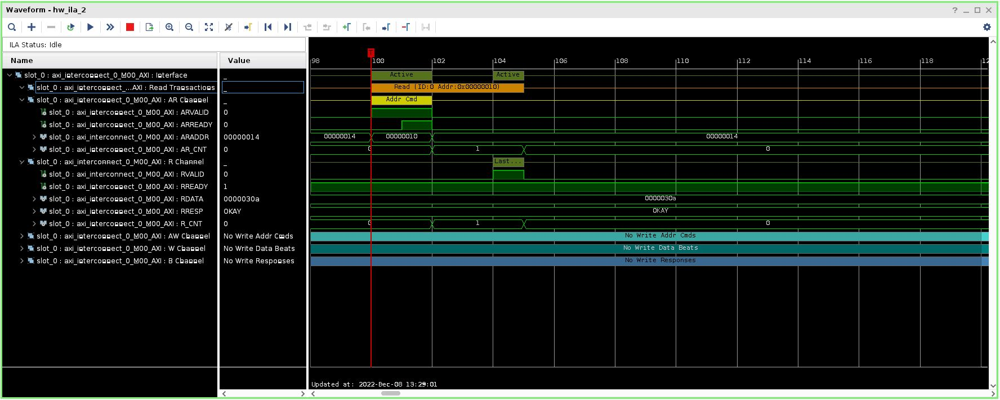
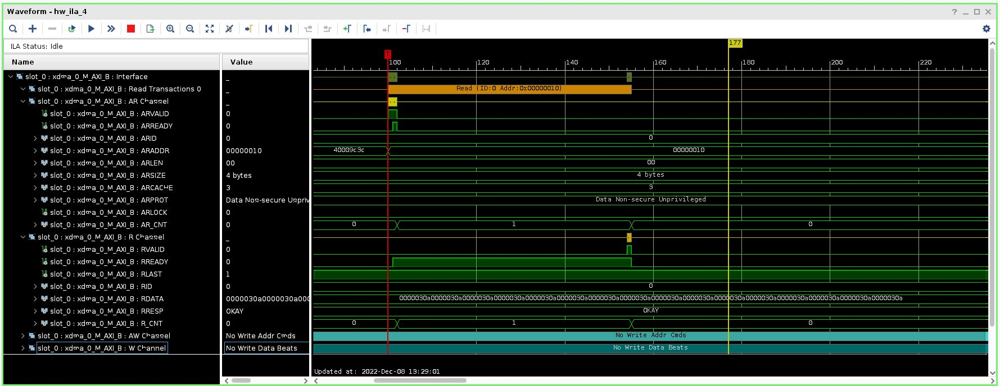

UL3524 Ultra Low Latency Trading |
PCIe DDR Reference Design: HW Manager Support¶
This section provides instructions on how to
Observe the behavior of the design via ILA through the HW Manager and
Run a memory test on the DDR memory (Linux machine)
Programming the Device¶
Connect to the card via the HW Manager and program the FPGA with the following files:
./PCIE_DDR/Vivado_Project/<project_name>/<project_name>.runs/impl_1/sherman.bit./PCIE_DDR/Vivado_Project/<project_name>/<project_name>.runs/impl_1/sherman.ltx
ILAs¶
The four included ILAs, described in the table below, provide a way to observe and verify the behavior of the design on HW.
| Name | Description |
|---|---|
| hw_ila_1 | Connects to the internal DDR I2C signals. |
| hw_ila_2 | Connects to the AXI Lite interface to the control registers. |
| hw_ila_3 | Connects to the DDR AXI interface. |
| hw_ila_4 | connects to the PCIE AXI output interface. |
Table 1. Description of signals captured by the ILAs
ILA Setup Instructions¶
On the Tcl console, enter the following command:
source ./PCIE_DDR/Scripts/config_ila.tclThe AXI triggers are setup for AWVALID or ARVALID to go high.
The I2C trigger is setup for when reset is deasserted.
Right click on the device (xcvu2p_0) and click on Refresh Device.
Memory Test¶
In addition to the ILA, the DDR memory can be tested via a memtest.c program.
The program, which runs on a Linux system, brings up the DDR I2C and the DDR IP and performs a memory test using 32-bit PRBS data. More detail on memtest.c can be found in PCIe DDR Reference Design: Overview.
Running the Memory Test¶
Instructions on how to run memtest.c are given below.
Display the card BDF and region 1 and 2 values which will be used in
memtest.c.
Run the following command to determine the card BDF(power cycle the card before executing this cmd):
lspci -vv -d 10ee:
An example output of this command is given below. In this example, the following BDF and region 1 and 2 values are:
BDF = 0000:01:00.0 (must be of the form 0000:00:00.0)
Region 0 = 0xc0000000
Region 1 = 0x80000000
$ sudo lspci -vv -d 10ee:
01:00.0 Serial controller: Xilinx Corporation Device 9048 (prog-if 01 [16450])
Subsystem: Xilinx Corporation Device 0007
Control: I/O+ Mem+ BusMaster- SpecCycle- MemWINV- VGASnoop- ParErr- Stepping- SERR- FastB2B- DisINTx-
Status: Cap+ 66MHz- UDF- FastB2B- ParErr- DEVSEL=fast >TAbort- <TAbort- <MAbort- >SERR- <PERR- INTx-
Interrupt: pin A routed to IRQ 16
Region 0: Memory at c0000000 (32-bit, non-prefetchable) [size=128K]
Region 1: Memory at 80000000 (32-bit, non-prefetchable) [size=1G]
Capabilities: <access denied>
Edit the following
memtest.ccode to match the BDF and region values of the card installed obtained in the previous stepdevice0 - set to the BDF value (must be of the form 0000:00:00.0)
region0_address - set to the ‘Region 0’ value
region1_address - set to the ‘Region 1’ value
memtest.c code to modify is shown below:
// Global Variables...
char device0[32] = "0000:01:00.0";
void* region0_address = (void*)0xc0000000;
void* region1_address = (void*)0x80000000;
Compile the code:
gcc ./memtest.c -o memtest.exeRun the program (Note: must run as sudo):
sudo ./memtest.exe [-c #cycles]-c : specifies the number of 32-bit addresses to write/read
Example output when memtest runs successfully:
$ sudo ./memtest.exe -c 1000
Initializing Memory Pointers...
Enabling DDR power and DDR IP...
Starting memtest
running 1000 cycles
...memtest complete
Example output if memtest encounters data errors:
# INDEX = READ DATA - REFERENCE DATA
[READ] ERROR :: 0x00000020 = 0x00000023 - 0x00000011
Example ILA Waveforms¶
ILA 2 monitors the AXI interface to the I2C control registers. 
ILA 3 monitors the AXI interface to the DDR data interface.
ILA 4 monitors the primary AXI interface from the PCIE XDMA IP. 
Support¶
For additional documentation, please refer to the UL3524 product page and the UL3524 Lounge.
For support, contact your FAE or refer to support resources at: https://support.xilinx.com
Copyright © 2020–2023 Advanced Micro Devices, Inc